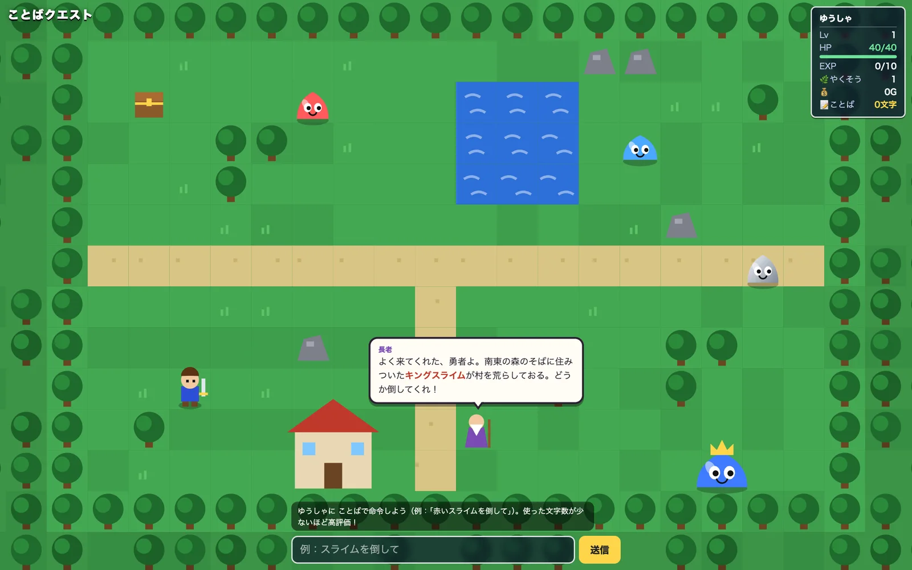

このUIがしていること
操作はキーではなく、文で行う。目的（キングスライムを倒す）は長老のせりふで示され、どう命令するかはプレイヤーに任される。
- 使った文字数が、ステータスの1項目として常に見える。短く伝えることが、遊びの目標になっている。
- 例文が入力欄と案内文の両方にあり、最初の1手に迷いにくい。
- 命令が意図と違う行動になったときに、どう知らされ、どう直せるかは、確認できていない。ゲームなので、もう一度命令すればよい、という形にはなる。
- 言葉で操作するゲームは、既存の事例にも複数ある。この事例は、日本語の命令と、文字数という制約を組み合わせている点が違う。
キャプチャ
{kind=link}

（原寸の画像を開く）見る箇所下端の案内文と入力欄、「送信」、長老のせりふ、右上のステータスにある「ことば 0文字」
入力から画面の変化まで
-
判断への入力
勇者への命令を、言葉で書いて送る。案内文は「ゆうしゃに ことばで命令しよう（例：「赤いスライムを倒して」）。使った文字数が少ないほど高評価！」。調査記録によれば、日本語と英語の両方を受け付ける。
-
Jevの判断
調査記録によれば、書かれた言葉を、限られた移動や行動へ対応づける。候補や確率は、画面にも調査記録にも出ていない。
-
結果がUIをどう変えるか
調査記録によれば、勇者がすぐに動き、ゲームの状態が変わる。右上のステータスに、レベル、HP、経験値、やくそう、所持金と並んで、使った文字数が出る。
- 判断型の見立て
- Choice推定
- 言葉を限られた行動へ対応づけるという調査記録からの見立て。質問型は画面にも投稿にも出ていない。
Jevとの適合
短い命令文を、限られた行動へ対応づけるのは、Jevに向く。反応が速ければ、文で操作しても遊びのテンポが保てる。ただし、対応づけの正確さや、曖昧な命令の扱いは、確認できていない。
確認範囲と未確認事項
日本語の作者による投稿と公開サイトを確認。掲載した画面は公開サイトを開いた直後の状態で、命令を送る前のもの。取得した画面にJevの表記はなく、Jevの利用は作者の投稿による。判断の確率や、やり直しの手段は、調査でも確認できていない。
- 確認済み公開サイトの初期画面（マップ、長老のせりふ、案内文、入力欄と送信、ステータスの文字数）、作者の投稿。言葉が行動へ対応づけられてすぐに動くという点は、2026-09-21の調査記録による
- 未検証行動の候補、確率の表示の有無、曖昧な命令や対応できない命令の扱い、やり直しの手段、文字数の評価の計算、ソースコード
- 推定扱い質問型（Choiceと見立て）。画面にも調査記録にも、質問型は出ていない
- 引用公開サイト画面を2026-09-21に必要範囲で取得。権利は作者に帰属する